What Studiobooks is#
Studiobooks is the back office for a small studio or agency. It carries one piece of work from the first enquiry to the cleared payment, as one chain of records: an enquiry becomes a proposal your client reads and answers online, an accepted proposal becomes a contract with an order form the client signs, the contract raises its own invoices through the billing run, and credit control shows who owes what and for how long.
There are two sides to it. The back office is where you and your colleagues work. The customer portal is where each of your clients signs in to see the proposals, order forms, invoices, apps and documents you have shared with them — under your logo and colours, and nothing of anyone else's.
Studiobooks runs in a browser at studiobooks.app and as an app for iPhone and iPad from the App Store. It is the same studio either way, and the same account signs into both. It is free to use today, with no card needed.

Creating your account and signing in#
Everyone has their own login. There are three ways in: Continue with Google, Continue with Apple, or an email address and password.
Your email address decides where you land. A brand-new address is taken to the setup wizard to create a company. An address a studio has invited as a colleague joins that studio's back office. An address a studio has sent proposals or invoices to opens that studio's customer portal.
Registering with an email address#
- Go to studiobooks.app. On the Welcome back page, click Create one.
- On Create your account, enter your Email, Password and Confirm Password, then click Create account. Use your work email. If a studio has already sent you a proposal or invoice, use the address it came to.
- On the Verify your email screen, type the 6-digit code from the email you've been sent. Didn't get it? Click Resend and check your spam folder.
- Click Verify. You're signed in and taken to the right place for your address.
Signing in and out#
Open the app while signed out and the Welcome back page appears. Use Continue with Google, Continue with Apple, or type your email and password and click Sign in.
To sign out of the back office, click the sign-out icon beside your name at the bottom of the menu (on a phone it is at the top right of the screen). You can also use Settings → Profile → Session and click Sign out.
Forgotten your password?#
- On the sign-in page, click Forgot password?.
- Enter your Email address and click Send reset link, then check your inbox.
- Open the link. On Choose a new password, fill in New Password and Confirm Password, and click Reset password. You're taken back to the sign-in page to sign in with the new one.
If something's not right#
"Invalid email or password" when signing in
Re-type both carefully, or click Forgot password? to set a new one. If you first registered with Google or Apple, use that button instead — there's no password on the account.
"Passwords do not match"
The two password boxes must be identical. Clear both and type the password again in each.
"Invalid verification code" when registering
The code was mistyped, or an older code was entered after a new one was requested.
Use the code from the most recent email, or click Resend for a fresh one.
No password-reset email arrives
The page shows the same message whether or not the address has an account — "If an account exists with that email, you'll receive a password reset link shortly." — so a typo, a Google or Apple account and a spam filter all look the same.
Check spam, check you typed the address you registered with, and remember Google and Apple sign-ins don't have a Studiobooks password.
"Invalid reset link" or "Failed to reset password"
The link was cut short by email software, has expired, or was already used.
Click Request a new link and use the fresh email. Copy the whole link into the address bar if clicking it doesn't work.
I expected the back office but landed in a customer portal (or the setup wizard)
Where you land depends only on the email address you signed in with. A colleague's invitation is tied to one exact address; a different address is treated as a new account, or as a customer if a studio has shared documents with it.
Sign out and sign back in with the address the invitation was sent to. If you were invited as a colleague and see Set up your company, don't create a new company — ask whoever invited you which address they used.
"No access yet — this account isn't set up on Studiobooks yet"
Access is per email address, and the address you signed in with isn't one the app recognises.
Sign out and back in with your work email, or with the address your last invoice arrived at. If that doesn't do it, email peter@edwardsapps.co.uk.
"We could not read your account"
Your sign-in worked, but the app could not work out which company the account belongs to — usually a connection blip.
Click Try again. If it keeps happening, click Sign out, sign in again, and email us if it still appears.
Setting up your company#
The first person from a studio creates the company; everyone else joins it by invitation (see Your team and roles). A new account is taken straight to the setup wizard: six short steps, then a first client. Everything in it can be changed later in Settings.
Nothing here is shared with, or filled in from, any other company on Studiobooks. A field you leave blank stays blank.
Walking the steps#
Each screen shows Step 1 of 7 and a progress bar. Click Save and continue to save the step and move on, Skip for now to move on without saving anything, or Back to return to the step before. Only the first step can't be skipped: the company name is the one thing the app needs.
| Step | What you fill in | Where it is used |
|---|---|---|
| 1 · Company | Legal name, Trading name, Company number, Registered office, Who signs on your behalf | The legal name prints on every invoice. The trading name is what customers see across the app and in emails. The signatory is named on order forms. |
| 2 · Address | Address line 1, Address line 2, Town, County, Postcode, Phone, Email, Website | The address block on proposals, order forms and invoices. The phone number and email are shown to your customers in their portal. |
| 3 · VAT | VAT registered switch; then VAT number and VAT rate | Off by default. Off means no VAT line on anything you issue. See below. |
| 4 · Bank | Bank, Account name, Sort code, Account number | The payment panel printed on every invoice, and included in the invoice email. |
| 5 · Invoicing | Document numbers start at, Default payment terms, Terms run from the invoice date, Payment terms options | How invoices are numbered and when they fall due. See below. |
| 6 · Branding | Logo, Logo for dark backgrounds, Primary colour, Accent colour, Tagline, Email sender name, Reply-to address, Alerts address, Invoice footer note | Your logo and colours go on every document and on the portal your customers sign in to. The alerts address is where new enquiries and proposal responses are announced to you. |
| 7 · First client | Client name, Status, Contact name, Contact email, Contact phone, Give this address portal access | One real customer, or a prospect you are quoting, so the app opens on your work. |
On the last step, click Add client and finish, or Finish without a client to add clients later. You'll see "Setup complete" and land on the dashboard.
The VAT step#
Leave VAT registered off unless your business is actually registered. While it is off, nothing you issue carries a VAT line. When you switch it on, the app asks for your VAT number (9 digits, no GB prefix) and a VAT rate, and from then on adds VAT at that rate to the invoices it raises and prints the number on them. An individual contract can carry its own rate.
Studiobooks applies whatever you set here; it doesn't decide your VAT position for you. If you're unsure whether or when to register, ask your accountant.
Numbering and payment terms#
- Your numbers are your own. Document numbers start at only matters until your first document exists. After that the sequence carries on from the highest number you have issued. Invoices and credit notes share one sequence.
- Default payment terms are applied to new clients and contracts unless you set something different on them.
- Payment terms options are the choices offered on clients and contracts. Terms written as a number of days, such as "30 Days", give a due date that many days after the invoice date. "On Receipt" is treated as due straight away: the app sets the due date three days after the invoice date.
- Terms run from the invoice date — switch this off and the days are counted from the end of the invoice month instead.
What must be filled in before you can bill#
You can skip steps and come back, but two things stay locked until the details are in place:
- The billing run stays locked until you have a company address and postcode, bank sort code and account number, default payment terms, and — if you are VAT registered — a VAT number.
- Issuing an invoice or credit note is refused until you have the legal name, address, a company email address, the bank name, account name, sort code and account number, and — if you are VAT registered — the VAT number. The message names exactly what is missing.
Coming back to the wizard#
Open Settings → Company and click Revisit setup (it reads Finish setup if you haven't finished). The wizard walks the same fields again with what you saved already filled in, and only what you change is saved. The wizard only ever fills fields in — to clear a field, do it in Settings.
If something's not right#
"Your company needs a name — it is what appears on every invoice."
Type your company's legal name in Legal name and click Save and continue. This is the one step that can't be skipped.
"Add your VAT number, or switch VAT registration off for now."
The VAT registered switch is on but the number is blank. An invoice charging VAT has to show it.
Enter the number, or switch VAT registration off and come back when you have one.
"Keep the logo under 2 MB — a PNG or SVG at a few hundred pixels wide is plenty."
Save a smaller copy of the logo and upload that. A logo a few hundred pixels wide is all a document needs.
"Give the client a name — or finish without one using the link below."
Either type a Client name, or click Finish without a client and add clients later from the Clients page.
The "Give this address portal access" box is greyed out
Portal access is given to an email address, and the Contact email box is empty.
Type the contact's email first. Ticking the box sends nothing — you invite them from the Clients page when you're ready.
"Your details are saved, but setup could not be marked as finished"
Every step saved, but the final "finished" mark didn't go through — usually a connection blip.
Click the finish button again. Nothing you typed has been lost.
Every page sends me back to the setup wizard
Setup hasn't been finished yet, and the back office stays closed until it is.
Walk to the last step — skipping what you don't have to hand — and click Add client and finish or Finish without a client.
Your team and roles#
Colleagues join your company by invitation, and each has a role. Open Settings → Team. The list is your company only — customers never appear here (their access is covered in Portal access and documents).
Inviting a colleague#
- Under Invite a colleague, type their email address and choose a role.
- Click Send invite. The invitation is emailed to that exact address, joins them to your company alone, and expires after 14 days if it isn't used.
- They click Accept the invitation in the email, then register or sign in with that same address, and are taken straight into your back office.
Invitations that haven't been taken up are listed under Invitations outstanding, with the role and the expiry date. A colleague who has joined but never signed in shows "not signed in yet" beside their address.
The three roles#
| Role | What it is for |
|---|---|
| Owner | Everything an Admin can do. Only an Owner can invite another Owner, make someone an Owner, change another Owner's role, or load the sample data. |
| Admin | Changes Settings, invites colleagues and changes their roles, runs the billing run, sends emails from the app (proposals, invoices, app links), sends order forms and documents for signature, and invites customers to the portal. |
| Staff | Works on the same records as everyone else, but the actions in the Admin row are refused. Staff can still edit their own profile under Settings → Profile. |
To change a colleague's role, pick a new one from the menu on their row. You can't change your own role, and a company can't be left without an admin.
If something's not right#
"Requires owner or admin access for this company"
Your role is Staff, and the action you tried — changing a setting, sending an email from the app, running the billing run — is for Owners and Admins.
Ask an Owner or Admin to do it, or to change your role under Settings → Team.
Settings shows "only an owner or admin can change them — a save will be refused"
You can read your company's details but not change them. Ask whoever set the company up to make the change or to give you the Admin role.
"You cannot change your own role"
Ask another Owner or Admin to change it for you.
"This is the last admin in your company — promote someone else first"
A company must always have someone who can manage it. Give another colleague the Admin or Owner role first, then make the change.
"Only an owner can invite another owner" / "Only an owner can make someone else an owner"
Admins can invite and manage Admins and Staff. Anything involving the Owner role needs an existing Owner.
"That address is already a member of this company"
They're already on the team list. If they can't get in, check they are signing in with exactly that address.
"Invitation created for … but the email could not be sent."
The invitation exists, so the colleague can still join: ask them to register or sign in at studiobooks.app with that exact address.
"That invitation could not be claimed"
Invitations are tied to one address and expire. This one has expired, been used already, or been replaced.
Click Try again once. If it still fails, ask whoever invited you to send a fresh invitation to the address you sign in with.
Finding your way around#
The menu down the left reads in the order the work happens: sell it, run it, get paid for it.
- Overview — Dashboard.
- Sell — Enquiries and Proposals.
- Run — Clients, Apps and Contracts.
- Money — Billing, Invoices and Credit control.
- Settings sits at the bottom, above your name and the sign-out icon.
On a phone#
On a phone the menu becomes a bar along the bottom of the screen: Home, Enquiries, Clients, Invoices and More. More — or the menu button at the top left — opens the full menu with every page. Each tab remembers where you were; tap the tab you are already on to go back to the top of it. Pull down on a page to refresh it.

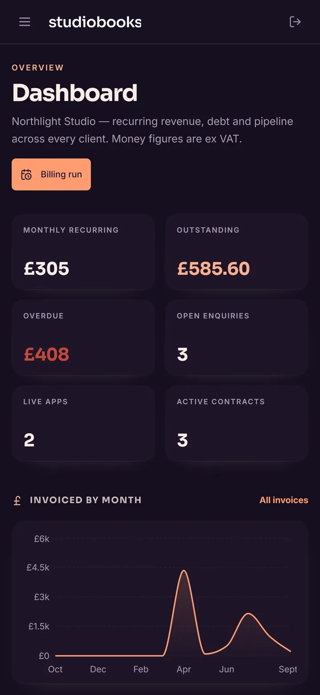
How the registers work#
Enquiries, Proposals, Clients, Contracts and Invoices are all registers and behave the same way:
- Tiles across the top give the headline figures for that page.
- Filter buttons narrow the list by status, and each register opens on All. A search box narrows it further.
- Click a row to open the record or its actions. On a computer it opens over the list; on a phone it fills the screen, with a back button at the top.
- On a phone, the table becomes a stack of cards showing the same information.
- The button at the top right, such as Enquiry or Invoice, adds a new record.
Coloured badges show where each record stands:
| Colour | Statuses |
|---|---|
| Dark, with bright lettering | New |
| Grey-blue | Draft, Concept |
| Blue | Sent, Contacted, Issued |
| Indigo | Viewed, Qualified, Proposal sent |
| Green | Accepted, Active, Live, Paid, Won |
| Amber | Prospect, Pilot, Not paid, Part paid, Paused |
| Red | Declined, Lost, Overdue |
| Violet | Demo |
| Grey | Credit, Ended, Retired, Void, Superseded, Former |
Documents — a proposal, an order form, an invoice — open as a full page laid out for A4. In a browser they open in a new tab so the register stays where it was. In the app they open in place, with a back link at the top.
Light or dark — choose System, Light or Dark under Settings → Profile → Appearance. The choice is saved on that device only.
The dashboard#
The dashboard is the page you land on: recurring revenue, debt and pipeline across every client. The Billing run button at the top goes straight to the billing run.
The six tiles#
| Tile | What it counts | Click to open |
|---|---|---|
| Monthly recurring | The monthly total of every active contract. Draft, paused and ended contracts aren't counted. | Contracts |
| Outstanding | What is still owed on issued invoices. | Credit control |
| Overdue | The part of that which is past its due date. Green at nothing, red above it. | Credit control |
| Open enquiries | Enquiries that are New, Contacted, Qualified or Proposal sent. | Enquiries |
| Live apps | Apps with the status Live. | Apps |
| Active contracts | Contracts with the status Active. | Contracts |
The sections underneath#
- Needs attention — everything worth chasing, worst first: overdue invoices, enquiry follow-ups that have fallen due, order forms and documents waiting for a customer's signature, and proposals waiting for an answer. Click any line to go to the page where you can act on it. It shows the eight most pressing. With nothing to do it reads "All clear".
- Due to bill — active contracts that have reached their next invoice date, with the invoice date, the period and the charge. It shows six; the billing run previews them all.
- Open enquiries — the six most recent, with who, what they're interested in, when it arrived and its status.
- Recent activity — the latest eight movements: invoices and credit notes issued, new enquiries, proposals sent, accepted or declined, and order forms and documents signed.
- Invoiced by month — what you invoiced, net, in each of the last twelve months. Only issued documents count, and credit notes are taken off, so a corrected month shows what was really billed.
If something's not right#
Banner: "Billing setup not finished"
Your company address, VAT status, bank details or default payment terms aren't all in place, and the billing run stays locked until they are.
Click Finish billing setup and fill in the gaps under Settings → Company and Settings → VAT & invoicing. The banner clears by itself. See what must be filled in.
A contract I expected isn't under "Due to bill"
Only active contracts whose Next invoice date is today or earlier are listed.
Open the contract on the Contracts page. If it is still a Draft, activate it. If it is active, check its next invoice date.
"Nothing invoiced yet" although I have raised invoices
Drafts don't count. The chart and the money tiles read issued documents only.
Open Invoices, filter by Drafts and issue the ones that are ready.
Enquiries#
The Enquiries page holds every approach, from first contact to won or lost. Enquiries arrive in two ways: your website's contact form can post them straight in (see Settings → Website), and you log the ones that come by phone or in person yourself.

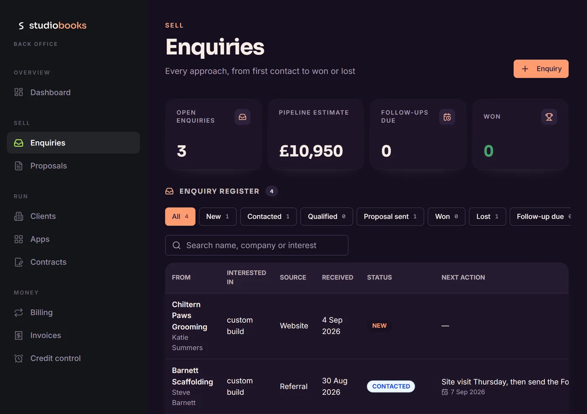
Reading the page#
- Tiles — Open enquiries, Pipeline estimate (the value estimates of open enquiries added up), Follow-ups due and Won.
- Filters — All, New, Contacted, Qualified, Proposal sent, Won, Lost and Follow-up due, each with a count. The search box looks in the name, company, email, interest, message and next action.
- Columns — From, Interested in, Source, Received, Status and Next action.
- An open enquiry whose follow-up date has arrived shows "Follow up today", or how many days over it is. An enquiry already linked to a client shows a small "Client" tag.
Logging an enquiry by hand#
- Click Enquiry at the top right. The Log an enquiry form opens.
- Under Who, fill in Name (the only field you must fill in), Company, Email and Phone.
- Under The enquiry, set Received, the Source (Website, Referral, Direct, Event or Other), Interested in and What they said.
- Under Pipeline, set the Status, a Value estimate (£), the Next action and a Follow up on date. The follow-up date is what puts the enquiry in "Needs attention" on the dashboard when it falls due.
- Under Documents, click Attach file to keep a brief or screenshot with the enquiry.
- Click Log enquiry.
Moving an enquiry along#
Click a row to open and edit the enquiry, then Save changes. For quick changes, use the ⋯ menu at the end of the row:
- Move to the next stage — for example Move to contacted. The stages run New → Contacted → Qualified → Proposal sent → Won.
- Set status — jump to any stage, forwards or backwards.
- Convert… — set the enquirer up as a client (see below).
- Open proposal — shown once a proposal has been started from the enquiry.
- Mark lost… — asks for a reason under Lost because, which is required. Lost enquiries stay on the register, greyed.
Converting a website enquiry#
An enquiry that arrived from your website has no client record yet. Convert… sets one up, optionally with an app record and a draft proposal ready to edit. Nothing is sent to anyone.
- Open the row's ⋯ menu and choose Convert… (or open the enquiry and click Convert… at the bottom).
- Under Client account, choose New client and check the Client name and Payment terms — or choose Link existing and pick the client, for an existing customer asking about something new. If the name looks like a client you already have, a warning headed "You may already have this client" lists the matches with a button to link to the closest one instead.
- Under App record, leave the switch on to create an app for them (App name and Tagline), or switch it off. It is created as a Demo and hidden from the portal until you make it visible.
- Under Draft proposal, leave the switch on and check the Proposal title, or switch it off.
- Choose what to Leave the enquiry as: "Qualified — still talking", "Proposal on its way" or "Won".
- Click Convert enquiry. If you asked for a proposal, it opens in the editor.
A client created this way starts as Active, with the enquirer as the main contact and their address on the client's portal list.
If something's not right#
"An enquiry needs at least a name."
Fill in Name. Everything else can be added later.
"Say why it was lost" / "Say why"
An enquiry can't be marked Lost without a reason. Type a line under Lost because — it is what you'll want to read back later.
The menu says "Already converted" and Convert is greyed out
The enquiry is already linked to a client. Every enquiry you log by hand is linked when it is saved, so this is normal for those.
To write a proposal for it, go to Proposals, click Proposal and choose that client.
Enquiries from my website aren't arriving
Your website's form has to post to the Studiobooks enquiry address and carry your company's enquiry key. Without the key, or with the wrong one, the submission is rejected.
Open Settings → Website and give the address, the key and the code snippet shown there to whoever looks after your website. See Website.
A website enquiry arrived but I got no email about it
The alert goes to the notification address in your settings. If that is blank or wrong, nothing reaches you.
Check Settings → Email → Notification address, and your spam folder.
Logging an enquiry created a second client for a customer I already have
When you log by hand, the enquiry is linked to an existing client only if the email address matches, or the name matches exactly (ignoring endings like Ltd). A different spelling creates a new prospect.
Use the existing client's exact name or email when you log repeat enquiries. Mark the spare client record as Former so it drops out of the active list.
"Could not load the enquiry register."
Usually a connection blip. Reload the page, or pull down to refresh on a phone.
The proposal register#
The Proposals page lists every proposal, what it is worth and where it has got to with its reader.

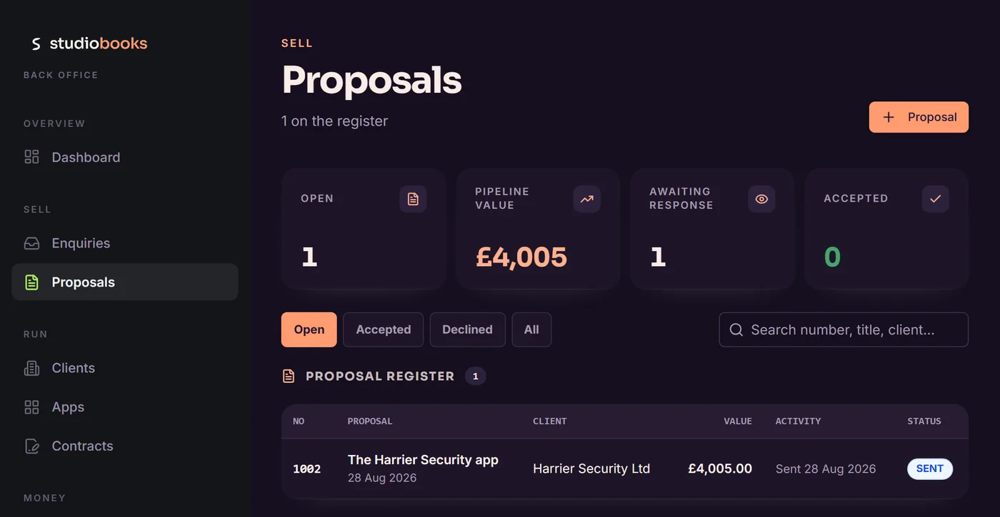
Reading the page#
- Tiles — Open (drafts, sent and viewed), Pipeline value, Awaiting response (sent or viewed) and Accepted.
- Filters — All, Open, Accepted and Declined. The search box looks in the number, title and client.
- Columns — No, Proposal, Client, Value, Activity and Status.
- Value is the price of the pricing option you marked as recommended (or the first option, if none is marked) — the discounted price where there is one. Pipeline value adds that up across open proposals.
- Activity shows the latest thing that happened: "Not sent yet", then Sent, Viewed, Accepted or Declined with the date.
| Status | What it means |
|---|---|
| Draft | Still being written. Its link doesn't work for the client and it doesn't show in their portal. |
| Sent | Sent by email from the app, or marked as sent by you. The link is live. |
| Viewed | The client has opened the link. The date of the first view is recorded. |
| Accepted / Declined | The client has answered, with their name and any note they left. |
| Superseded | Retired by you, usually because a newer version replaces it. |
Starting a proposal#
- Click Proposal at the top right.
- In New proposal, choose the Client (or leave "No client yet") and type the App name — it becomes the cover title and can be changed later.
- Click Create draft. The proposal is given the next number and opens in the editor.
You can also start one from a website enquiry with Convert…, which links the enquiry, the client and the proposal together.
What you can do from the register#
Click a row to open its actions:
- Open in the editor — edit the document.
- Send by email — see Sending and responses. Not available once a proposal is accepted, declined or superseded.
- Create public link / Copy public link — copies the client's reading link.
- Mark as sent — for a draft you sent some other way.
- View the public page — see exactly what the client sees.
- Create the contract — once it has been sent; see From accepted proposal to contract.
- Share to portal switch and Invite to portal — see Sharing in the portal.
- Duplicate as a new draft and Mark as superseded — see Sending a revised version.
Underneath, the dialog shows when the proposal was sent, when it was first viewed, and who accepted or declined it, with their note.
If something's not right#
The Value column shows "—", or the wrong figure
The value is read from the recommended pricing option — or the first one — and uses the discounted price if one is filled in.
In the editor, open Pricing, tick Recommended on the option you expect to sell, and check its prices.
"Send by email" is greyed out
The proposal has been accepted, declined or superseded, so there is nothing left to send.
To send a new version, use Duplicate as a new draft and send that.
"The proposal could not be created." / "The proposal could not be duplicated."
Usually a connection blip. Try again. If the register now shows an extra draft you didn't expect, open it and carry on from there.
Writing a proposal#
The editor has the form on the left and the real document on the right, always in step. On a phone, switch between the two with the Edit and Preview buttons. A small "Page 2 of 7" marker shows where you are in the preview.
Your work saves itself a moment after you stop typing. The line beside the status badge tells you where it stands: "Unsaved changes", "Saving…", then "Saved" with the time. The Save button (or Ctrl+S) saves at once if you'd rather not wait.
The sections of the form#
Click a heading to open it. Lists of things — paragraphs, requirements, pages, pricing options — all work the same way: an add button underneath, and up, down and remove buttons on each item.
| Section | What goes in it |
|---|---|
| Cover & summary | Title, Proposal number, Subtitle, Client, Prepared for, Date, Valid until, Summary heading and Summary paragraphs — the short version on the cover. |
| Requirements | An Intro and a table of what the client asked for. Each row has the requirement, a status — Working, Planned, Optional or Excluded — and how you answer it. |
| Sections | Each section is a full page of the document: Eyebrow, Heading, Standfirst, Body, an optional pull-out panel (Aside heading, Aside body) and an optional screenshot (Image URL, Image caption). |
| Pricing | Heading, Discount label, Intro, Discount note, the pricing options (see below) and a Footnote. |
| Data protection | A Heading and Paragraphs on access, ownership and export. |
| Next steps & closing | Heading, Next steps, the Steps strip along the closing page, About heading, About your company and a Closing note. |
| Attachments | Specs, mock-ups or supporting files, added with Attach file. |
| Theme & sharing | The document's colours, the Share to portal switch, Invite to portal and the public link. |
The Body of a section accepts simple formatting marks: a blank line between paragraphs, **bold**, *italic*, and lines starting with - for bullet points.
Pricing options#
Each pricing option is a card on the pricing page. Click Add pricing option for another.
- Option name and Badge — the badge is a small label on the card, such as RECOMMENDED.
- List price £ and Price after discount £ — leave the second blank when there is no discount. Discount line is the small print under the price.
- Per month £, For how many months and Then falls to £ — the monthly fee. Fill in only the first for a flat fee. Fill in all three when a higher rate applies for a set number of months and then drops.
- Monthly line — how the monthly fee reads on the card. Leave it blank and it is written for you from the three figures above.
- Bullets and Timeline line — what the option includes and when it would be live.
- Recommended — tick one option. It is highlighted in the document and is the figure the register shows.
The Footnote is where you say whether prices include VAT and what the price assumes. Studiobooks doesn't add VAT to the figures in a proposal; VAT is worked out on the invoices.
Colours#
Under Theme & sharing you can set the colours for this one proposal — for example to match the client's own brand. There are eight colours, each with a colour picker and a box for a colour code. Default colours applies the standard set. From client brand builds a set from the tile colour of one of the client's apps. Check the preview afterwards: the lighter tints carry the cover and the pricing cards.
Previewing and saving a PDF#
- Preview opens the finished document on its own page.
- PDF opens the same page and the print dialog with it. Choose Save as PDF, paper size A4, margins None.
- On the document page, Print / Save as PDF does the same. On a phone the button reads Save PDF and makes a PDF file you can share or save. Editor takes you back.
If something's not right#
"Autosave failed — your last change is not saved yet."
The connection dropped while the proposal was saving.
Stay on the page, check your connection and click Save. The save line reads "Unsaved changes" until it has gone through. Your browser will also warn you if you try to leave with unsaved changes.
"The preview could not render with the current values"
Something half-typed — an unfinished colour code, an empty pricing figure — can't be drawn yet.
Keep editing; the preview comes back by itself. Your changes are still being saved.
"… needs a hex colour like #488F00."
A colour code is a # followed by six letters or digits. Use the colour picker beside the box if you don't have the code.
"No client brand colour found — set an app tile colour on one of their apps first."
From client brand takes its colour from the tile colour of the client's apps, and none of them has one — or the proposal has no client.
Choose the client under Cover & summary, and set a Tile colour on one of their apps on the Apps page. Or set the colours by hand.
"Proposal not found"
The link is out of date. Click Back to proposals and open it from the register.
The PDF has white borders, or cuts the page off
The print dialog is using its own margins or a different paper size.
In the print dialog choose Save as PDF, paper size A4 and margins None.
Sending a proposal and getting an answer#
A client reads a proposal through a private link — no account needed — or in their portal. Either way they can accept or decline it online.
Sending it by email from the app#
- In the editor click Send, or from the register click the row and choose Send by email.
- Check the To address — it starts as the client's main contact — and add a Personal message (optional), which appears above the button in the email.
- Click Send proposal.
The email goes out under your company's name, with a "Read the proposal" button. Sending marks the proposal as Sent and switches its link on. The confirmation message has a Copy link button if you want the link for yourself. Sending again later re-sends the same link.
Sending the link yourself#
If you'd rather write your own email, or hand the proposal over in a meeting:
- Click Copy link in the editor (or Create public link in the register's actions) and paste the link wherever you like.
- Click Mark sent in the editor (or Mark as sent in the register's actions).
Sharing it in the portal#
Switch on Share to portal — in the editor under Theme & sharing, or in the register's actions — and the proposal appears under the client's portal login. It is shared with every address on the client's record: the portal list, the main contact and the accounts contact. A draft still doesn't show in the portal until it has been sent or marked as sent.
Invite to portal emails one of the client's people a link to sign in; see Inviting someone to the portal.
What your client sees#
The proposal opens as a page under your name, with your contact details at the top. A bar stays in view at the bottom: who it was prepared for, the date it is open until, and two buttons — Decline and Accept this proposal. Either one asks for their name and an optional note.

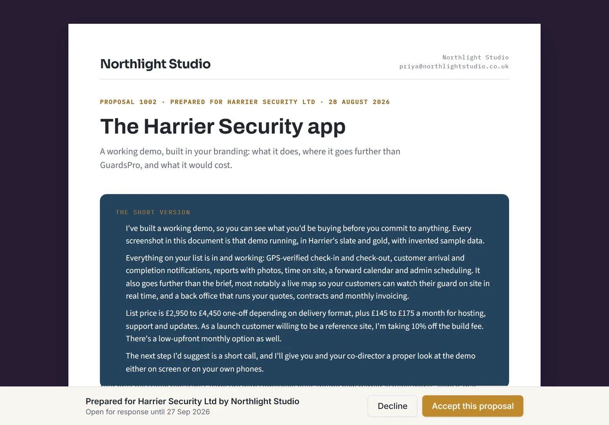
- The first time they open it, the status changes from Sent to Viewed and the date is recorded.
- If you set a Valid until date, the bar shows "Open for response until" that date. The whole of that day still counts. After it, the accept button is replaced by "This proposal has lapsed", though a decline can still be recorded.
- When they answer, the proposal becomes Accepted or Declined, their name and note are saved on it, and an email goes to your notification address (Settings → Email). It also appears under Recent activity on the dashboard.
- Accepting records their answer. The contract itself is the order form they sign next.
From accepted proposal to contract#
- On the Proposals page, click the proposal and choose Create the contract.
- If the proposal has more than one pricing option, you're asked "Which option did they go for?". Pick the one that was agreed. It isn't always the recommended one, so the app asks rather than assumes.
- The new contract form opens with the client, the proposal number, the build fee, the monthly charge, any lower rate it falls to and the package name already filled in. Check it, complete it and save. See Contracts and order forms.
Nothing is saved until you save the contract.
Sending a revised version#
- Click the proposal in the register and choose Duplicate as a new draft. The copy gets a new number.
- Edit the copy and send it.
- Go back to the old one and choose Mark as superseded, then Supersede.
A superseded proposal isn't deleted. Its link keeps working, so an old email doesn't lead nowhere, but the client sees a line saying it has been superseded and to check with you for the latest version.
If something's not right#
My client sees "This proposal link isn't available"
The proposal is still a draft. A draft's link is switched off on purpose.
Open the proposal and click Mark sent, or send it with Send. The same link then works — there's no need to send a new one.
"Enter a valid email address."
The To box is empty or mistyped. One address only.
"Your company name is not set — add it in Settings before sending a proposal"
The email goes out under your name, so it needs one. Fill in Legal name and Display name under Settings → Company, then send again.
"This proposal has been superseded — send the replacement instead"
A superseded proposal can't be emailed. Open the newer version and send that.
My client says the proposal has lapsed and they can't accept
Today is after the Valid until date.
Open the proposal in the editor, move Valid until to a later date under Cover & summary, and ask them to reload the page.
A client accepted, but no email told me
The alert goes to your notification address. If that is blank, the answer is still recorded but nobody is emailed.
Fill in Settings → Email → Notification address. The answer itself is on the proposal and on the dashboard.
"Could not reach the clipboard."
Your browser blocked the copy. The link is shown in the message itself — select it there and copy it by hand.
Clients#
The Clients page is one book behind everything: each account with its contacts, the apps you run for it, what it pays each month and what it owes right now. A client is the account that gets invoiced; apps, contracts, proposals and documents all hang off it.

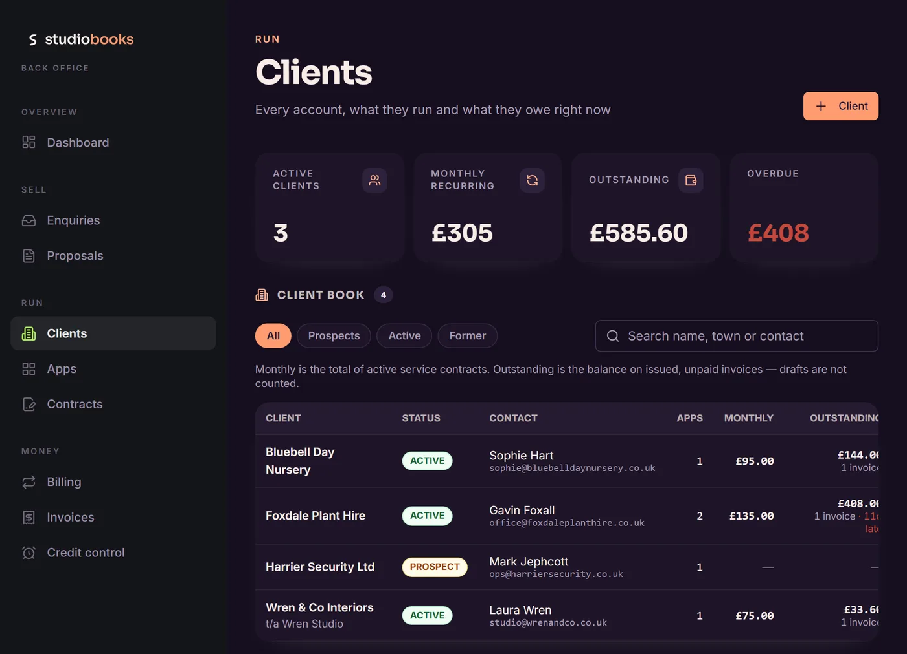
Reading the page#
- Tiles — Active clients, Monthly recurring, Outstanding and Overdue.
- Filters — All, Prospects, Active and Former. The search box looks in the name, town and contact.
- Columns — Client, Status, Contact, Apps, Monthly and Outstanding.
- Monthly is the total of the client's active contracts. Outstanding is the balance on issued, unpaid invoices, with the number of invoices and how many days late the oldest is. Drafts aren't counted.
Adding a client#
- Click Client at the top right.
- Under Identity, type the Client name exactly as it should read on the invoice. Add a Trading name only if it differs, the Company number, and set the Status: Prospect, Active or Former. Sector, How they found us, Client since and Website are optional.
- Under Address, enter where the invoice is addressed. Fill in Registered office only if it differs.
- Under Main contact, enter the person you deal with day to day.
- Under Accounts contact, enter who pays the invoices, or click Same as above. Invoices are emailed to the accounts contact first, and to the main contact only if there isn't one.
- Under Portal invitations, add the address of anyone who should have a portal login straight away. Each gets an invitation email when the client is created.
- Under Terms & VAT, set the client's Payment terms — they drive the due date on every invoice raised for this client — and their VAT number if you want it on file.
- Click Create client.
Once the client exists, clicking it opens the full record with four tabs: Details, Portal access, Documents and Activity. Change anything on Details and click Save client.
- Status is yours to set. Move a prospect to Active when the work is won, and to Former when it ends. Former clients stay on file with their history.
- The order form needs the legal details. The client's company number, registered office (or address) and a contact email are printed on the order form, which reports them as missing until they are filled in.
- General notes are for you. They aren't printed on documents or shown in the portal.
- The Activity tab is a read-only summary of the client's apps, contracts, proposals and recent invoices, each with a link to its own page.
If something's not right#
The Create client button is greyed out / "A client needs a name"
Type the Client name. It is what appears on the invoice.
"Looks close to … — check you are not creating a second account for the same customer."
The name you typed is very like a client you already have. Two accounts for one customer means split invoices and two balances.
If it is the same customer, cancel and use the existing record. If it really is a different business, carry on — the warning doesn't stop you saving.
"… invitations could not be sent" after creating a client
The client was created, but one or more portal invitation emails didn't go — for example because the address belongs to someone who signs in to a back office.
Open the client's Portal access tab and invite the address again from there; the invite screen explains what is wrong with it.
A client's Outstanding figure looks too low
Only issued invoices count. A draft isn't a debt yet.
Open Invoices, filter by Drafts and issue what is ready.
A client's Monthly figure shows "—" although they have a contract
Only active contracts count towards the monthly figure. A draft or paused contract isn't recurring revenue yet.
Open the contract on the Contracts page and activate it when it is live.
I can't find a way to delete a client
There isn't one. Set the client's Status to Former and it drops out of the Active filter while its invoices and history stay intact.
Portal access and documents#
Your customers sign in to the portal with an email address, and what they see is decided by which addresses are on their client record. This chapter covers the two tabs of the client record that control it: Portal access and Documents. What the customer then sees is described in For your customers: the portal.
How portal access works#
- Three kinds of address count: the addresses on the client's portal list, the main contact's email and the accounts contact's email. The last two are included automatically; you don't need to add them to the list.
- Nothing is visible until you share or issue it. A customer sees proposals you have shared (never drafts), invoices and credit notes you have issued (never drafts), apps you have switched on for the portal with their user guides, documents you have made visible, and order forms you have sent for signature.
- Each customer sees only their own client's records.
The portal list#
- Open the client and choose the Portal access tab.
- Type an address and click Add, or click the cross beside an address to remove it.
- Click Save portal access.
Saving applies the list to everything already shared with that client — documents, apps, proposals and issued invoices — so a removed address loses access and a new one gains it. The message tells you how many records were updated.
Inviting someone to the portal#
Adding an address gives access but tells nobody. Invite to portal does both: it adds the address to the list, opens up what is already shared, and emails the person a link. You'll find the button on the client's Portal access tab, on a proposal, on an app card (as Invite) and in a contract's actions.
- Click Invite to portal.
- Under Send to, pick one of the client's addresses — each is labelled Main contact, Accounts or Portal list — or choose Another address and type one.
- Read the check underneath. It tells you whether the person already has a login (the email asks them to sign in) or not (it asks them to register with that address), and lists what they'll see once they sign in.
- Click Send invitation.
Sharing files#
On the client's Documents tab, click Upload document and choose a file. It is shared to the client's portal straight away.
- Set its category — Agreement, Data processing agreement, Privacy policy, Guide or Other — so it is filed under the right heading in the portal.
- Switch Visible in portal off to keep a file for your eyes only.
- To remove a file, click the bin icon, then Delete to confirm (or Keep).
Documents the client signs#
For an agreement, a data processing agreement or a policy the client should sign, write the document in the app. An uploaded file can be read and downloaded, but only a document written in the app can be signed.
- On the Documents tab, click Write a document.
- Fill in the Name shown in the portal and choose a Category.
- Write the text on the Write tab and check it on the Preview tab. Use
#at the start of a line for a heading,**bold**,*italics*, and-or1.for lists. Tables aren't supported, so write schedules as lists. The signature block is added for you. - Click Save. The document stays internal — the client can't see it yet.
- When it is ready, click Send for signature on its row, choose the address to Send to, add a Note (optional) and click Send.
Sending shares the document in the client's portal and emails that person a "Review and sign" link. They read it and sign by typing their name. Each row shows where the document stands: "Not sent for signature", "Sent for signature" with the date, or "Signed by" with the name, date and time. You're emailed when it is signed, and it appears on the dashboard.
- The signed copy is frozen. Open a signed document to see exactly what was signed.
- Changing a document that is out for signature is allowed, but the client is asked to reload and read it again before they can sign.
- Send again re-sends the email for a document that hasn't been signed yet.
- Your half of the signature block uses the signatory's name, position and signature from Settings → Company.
If something's not right#
My client has signed in but can't see a proposal, invoice or document
One of three things: they signed in with an address that isn't on their record; the item hasn't been shared or issued yet (drafts never show); or the address was added after the item was shared and the list hasn't been saved since.
Check which address they sign in with. Add it on the Portal access tab and click Save portal access, which opens everything already shared to it. Then check the item itself: a proposal must be sent and shared, an invoice issued, a document visible.
"That does not look like an email address." / "Already on the list."
Check the address for typos and spaces. Each address goes on the list once.
"Save or undo your changes to the list before inviting someone."
You've edited the portal list but not saved it. Click Save portal access first, then invite.
"This address signs in to a company's back office on Studiobooks…"
An address that belongs to a studio's team — or has a pending invitation to one — opens the back office when it signs in, so it would never reach the customer portal.
Invite a different address for that person.
"This address already has customer portal access from another business on Studiobooks."
A portal login shows one business at a time, so this person may keep seeing the other business's portal instead of yours.
Use a different address for them if you can. If you want to go ahead anyway, tick I understand — invite them anyway.
"Portal access granted, but the email to … did not send"
The address is on the list and can sign in; only the email failed. Invite them again, or tell them to go to studiobooks.app and register or sign in with that address.
"… records could not be restamped"
The list was saved, but some shared records still carry the old set of addresses.
Open the client's Portal access tab and click Save portal access again to retry.
"This client has no portal, contact or accounts address yet."
A document can only be sent for signature to one of the client's own addresses. Add one under Portal access or on the Details tab, then send.
"Give the document a name and some text"
A written document needs both a name and a body before it can be saved.
There's no "Send for signature" on a file I uploaded
Only a document written in the app can be signed. An uploaded file has no text for the signature to be attached to.
Use Write a document and paste the wording in, then send that for signature.
Apps#
The Apps page is a register of the apps you have built, or are building, for your clients. Each app is a card with its links one click away — handy for opening a demo in a meeting — and it is also the tile the client sees in their portal, once you switch that on.
Adding an app#
- Click New app.
- Under Identity, fill in the App name, choose the Client, and add a Tagline — one line on what it does. Set the Status (Concept, Demo, Pilot, Live or Retired), the Platform and, when you have one, the Launch date.
- Under App icon, upload an image, or leave the coloured letter tile and choose its Tile colour and Letter.
- Under Links, fill in the App URL and Demo URL — they drive the launch buttons on the card — and the App Store and Google Play links if the app is in the stores. The two further links in this group are for your own reference and aren't shown to the customer.
- Under User guides, click Upload guide to attach PDFs or images the customer can read, and give each a title and a short description.
- Under Portal & notes, tick Show this app in the customer portal when you're ready for the client to see it. Monthly note says what the recurring charge covers and is shown on the card; Notes are internal only.
- Click Add app.
The app card#
- Open and Demo open the app and the demo in a new tab, so the register stays put. App Store and Google Play appear when those links are filled in.
- The card says whether it is "In the customer portal" or "Not shown in the portal".
- Send link emails the customer a message in your name with a button that opens the app. Choose who to Send to, add a Personal message if you like, and click Send email.
- Invite invites one of the client's people to the portal (see Inviting someone to the portal).
- Edit reopens the form.
Filter the page by status, or search by app, client or tagline. Live apps are listed first and retired ones last.
User guides for an app#
A user guide attached to an app shows on its card, here and in the client's portal. Clicking it opens a preview with buttons to download, print and share it. Each guide has its own share link that opens without signing in, so your client can pass it on to their own staff or customers.
If a link has gone somewhere it shouldn't, edit the app and click New link beside the guide, then save. Links already sent stop working.
If something's not right#
"An app needs a name — it is what the customer sees."
Fill in App name.
"Portal visibility needs at least one email on the client record"
You ticked Show this app in the customer portal, but the client has no portal, accounts or contact email — or no client is chosen — so nobody could see it.
Choose the client, add an email on their record, then save the app again.
"Nothing to link to" when sending a link
The email's button points at the App URL, and this app doesn't have one yet.
Click Edit, fill in App URL, save, then send.
The card says "Nothing to open yet"
Neither an App URL nor a Demo URL has been filled in. Add one under Links in the app's form.
Someone opening a guide link sees "This guide link isn't available"
The guide's link was replaced with New link, or the guide was removed.
Open the guide's preview and share the current link again.
The client can't see their app in the portal
Edit the app and check Show this app in the customer portal is ticked and the right client is chosen. Then check the address they sign in with is on the client's record (see the entry above).
Contracts and order forms#
A contract is the record the billing run reads. It holds what you charge each month, how often and on which day you invoice, any one-off build fee, and the payment terms. It also produces the order form your client signs. Only active contracts are billed.
Reading the page#
- Tiles — Active, Recurring / month and Due to bill.
- Filters — All, Active, Draft, Paused and Ended.
- Columns — Contract, Client, App, Per invoice (the amount of each invoice and how often), Next invoice (flagged "Due" when it has arrived), Auto, Order form and Status.
- The Order form column reads "Not sent", "Awaiting signature" or "Signed" with the date.
- When contracts have reached their next invoice date, a Due to bill panel names them. The billing run raises their invoices.
Creating a contract#
The quickest way is Create the contract on an accepted proposal, which fills in most of the form. To start from scratch, click Contract at the top right. Either way the form has five parts.
1 · Agreement
- Client and App — choose both. A new contract takes its payment terms from the client.
- Contract number — suggested for you and confirmed when you save. If someone else has taken it in the meantime, the next free number is used.
- Status — Draft, Active, Paused or Ended. Start as Draft.
- Start date, End date (leave blank for a rolling agreement), Term (months) and Renewal — Rolling, Fixed term or Review at term end.
- Proposal number and Customer PO reference if there are any.
2 · What the monthly charge covers
- Each line has a Description (as it prints on the invoice) and a Per month (£) amount. Click Line to add another.
- Then falls to (£) is for a line that drops to a lower rate after an initial period. Leave it blank if the line never changes.
- The total, Recurring charge, per month, is added up for you and is what the billing run charges.
3 · Billing
- Frequency — Monthly, Quarterly or Annually. A quarterly invoice is three months' charge; an annual one is twelve.
- Billing day of month — 1 to 28, so every month behaves the same.
- Next invoice date — leave blank. Activating the contract fills it in, and the billing run moves it on each time a period is invoiced.
- Payment terms — decides each invoice's due date.
- Initial period (months) — how many months are charged at the higher rate before each line falls to its "then falls to" figure. Blank for a flat fee.
- Invoice in advance — on, the invoice is raised at the start of the period it covers; off, after the period has been worked.
- Invoice automatically — off by default. See Automatic invoicing before you switch it on.
A line under the switches confirms whether invoices from this contract will carry VAT, and at what rate, based on your VAT settings.
4 · One-off build fee
- Build fee (£, ex VAT) — the one-off charge, invoiced separately from the monthly run.
- List price before discount (£, optional) and Discount label — only so the order form can show what a discount was worth.
5 · Order form
- Order date, Package, Target live date and Usage assumptions — details that appear only on the order form.
Click Create contract. To change it later, click its row and choose Edit contract, then Save contract.
Invoicing the build fee#
- Save the contract with a build fee on it, then open it again with Edit contract.
- Click Raise build-fee invoice now.
- Go to Invoices, review the draft and issue it.
Raising the build-fee invoice also starts the clock on the monthly charge: First monthly invoice is set to four weeks later, and the monthly invoices and any initial period are counted from that date.
The order form and getting it signed#
The order form is built from the contract: the two parties, what is being built, the fees, the term and a signature block. Studiobooks' Standard Terms of Supply are attached to it, filled in with your company's details. Read the whole document, terms included, before you send your first one, and take advice if you're not sure they suit your business.
- Click the contract's row and choose Order form to read it. Anything the document needs and doesn't have is listed in a banner headed "Fill these in before you send it", and marked in green on the page.
- Fill the gaps on the contract, the client record or in Settings, then reload.
- Back in the contract's actions, click Send for signature.
- Choose who to Send to from the client's addresses, add A note in the email (optional) and click Send for signature.
The order form goes into the client's portal and that person is emailed a "Review and sign" link. They read it and sign by typing their name (see Documents and signing). When they do:
- you get an email, and it appears on the dashboard;
- the signed copy is frozen — later changes to the contract don't alter what was signed;
- a Draft contract becomes Active, ready for the billing run. Where a build fee is still to be invoiced, the monthly invoices start once you have raised it.
Other things in a contract's actions:
- Remove from portal withdraws an unsigned order form. A signed one stays — it is the customer's copy of what they agreed.
- Print / Save as PDF, on the order form page, is there for a customer who wants paper.
Activating, pausing and ending#
- Activate makes the contract billable. If it has no next invoice date, one is set: the billing day in the start month, or the month after if the start date is past it — or the First monthly invoice date where a build fee has been invoiced. The message confirms the first invoice date.
- Pause stops the billing run picking it up until you activate it again.
- End contract asks why it is ending and stops billing for good. Invoices already raised aren't touched; credit anything that shouldn't stand.
If something's not right#
The billing run never picks this contract up
Only contracts that are Active and have a Next invoice date on or before the run date are due. A Draft or Paused contract, or one with a blank date, is invisible to the run.
Click the contract and choose Activate, which also sets the date. Then check the date is the one you expect.
"Fill these in before you send it — the order form is missing …"
A customer shouldn't be asked to sign a document with gaps in it, so sending is blocked until the list is empty. The order form needs: your legal name, company number, registered office, company email and who signs on your behalf; a build fee or a monthly charge; the customer's legal name, company number, registered office and a contact email; an order date and a minimum term.
Your own details are under Settings → Company. The customer's are on their client record. The order date and Term (months) are on the contract.
"… is not on the client record, so the portal cannot admit it."
The order form can only go to one of the client's own addresses. Add the address under the client's Portal access, or invite it to the portal, and it will appear in the list.
"Link this contract to a client first — the order form needs their details and addresses."
Edit the contract and choose a Client.
"The order form is in the portal, but the email to … did not send"
The customer can already sign it: ask them to sign in and open Documents. Or use Send for signature again.
There's no "Send for signature" in the contract's actions
The order form has already been signed, or the contract has ended. A signed order form can't be sent again, and an ended contract can't be signed.
For a new agreement with the same client, create a new contract.
"Raise build-fee invoice now" is greyed out
The contract hasn't been saved yet, the build fee is blank or zero, or a build-fee invoice has already been raised for it.
Save the contract first and reopen it. If one has been raised, the form says a draft exists — find it on the Invoices page.
The contract was saved with a different number from the one shown
The number in the form is a suggestion, confirmed only when you save. If it had been taken in the meantime, the next free one was used.
The Create contract button is greyed out
The contract needs a client name. Choose a Client, or type the Client name.
The billing run#
The billing run reads your active contracts and raises the invoices that are due, as drafts for you to look over. It shows what it is about to do before it writes anything, and a period is billed once — running it twice doesn't produce two invoices.
Until the company details an invoice needs are in place, this page shows "Billing setup is not finished" with a list of what is still outstanding. See what must be filled in.

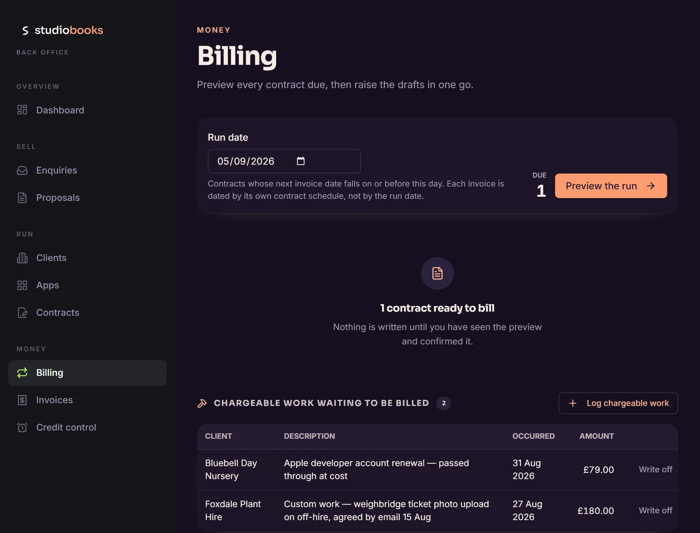
Running it#
- Open Billing. The Run date starts as today, and Due shows how many contracts have a next invoice date on or before it. Each invoice is dated by its own contract's schedule, not by the run date.
- Click Preview the run. Nothing is written yet.
- Read the preview. Tiles show the number of Invoices, the Net, the VAT (if you're VAT registered) and the Grand total. Under "Drafts the run would create", each contract shows the client, the period covered, the invoice date, every line and its totals.
- Click Continue, read the summary under Confirm the run, and click the Raise … drafts button. Back to preview takes you back without writing anything.
- When "Run complete" appears, click Open the invoice register and issue the drafts (see Issuing an invoice).
Reading the preview#
- Each recurring line is the contract's line with the period added to its description. Quarterly and annual contracts are charged three or twelve months at once.
- VAT is added at your rate if you are VAT registered, and left off entirely if you aren't — there is no £0.00 VAT row.
- "The run will skip this contract" marks a contract that is due but can't be invoiced, with the reason: nothing to bill, or no client linked. Skipped contracts aren't moved on, so the next run picks them up once the problem is fixed.
- More than one period outstanding? The run bills the oldest one. Run it again to catch up the rest.
- An "Auto-invoice" tag marks a contract set to invoice automatically. Raising it here closes the period and leaves a draft for you to issue, like the rest.
Chargeable work#
Extras outside the monthly charge — custom work, store fees passed through at cost, a domain renewal — wait on the Billing page under "Chargeable work waiting to be billed" and are added to the client's next invoice by the run.
- Click Log chargeable work.
- Choose the Client. Contract (optional) ties the work to one contract's next invoice; left untied, it joins the client's next invoice whichever contract raises it. App (optional) records which app it was for.
- Choose the Type of work and the Date of the work, and write a Description — it becomes the invoice line the customer reads.
- Enter a Qty and Unit rate, or just type the Amount. Amounts here are before VAT. VAT is applied when the invoice is raised.
- Click Log the work.
If a piece of logged work will never be charged, click Write off on its row and confirm. The record is kept, marked written off; it just leaves the billing queue.
Automatic invoicing#
Studiobooks also runs the billing job by itself every day, for every company — there is nothing for you to schedule. What it does with a contract depends on that contract's Invoice automatically switch:
- Off (the default) — nothing is issued for the contract automatically. Its invoice waits for you to run the billing run and issue the draft yourself.
- On — when the contract falls due, the daily job raises its invoice and issues it on the spot, with the next number. It is then visible in the client's portal.
An automatically issued invoice isn't emailed to the client for you. Send it from the Invoices page with Email to the client. Leave the switch off until you're confident the contract's lines, dates and terms are right, because an issued invoice can only be corrected with a credit note.
The "How the run behaves" panel at the foot of the Billing page repeats these rules. The technical details under it are for whoever runs the Studiobooks service, not for you.
If something's not right#
"Billing setup is not finished"
An invoice needs a company address, a settled VAT position, bank details and default payment terms. The page lists which are "Still outstanding".
Click Open Settings and fill them in under Company and VAT & invoicing. The run unlocks by itself.
"Nothing due on this date"
No active contract has a next invoice date on or before the run date.
Check the contract is Active and look at its Next invoice date on the Contracts page. To bill ahead, move the Run date forward.
"Nothing to bill — no item value on the contract and no pending chargeable events."
The contract is due but its lines add up to nothing and there's no chargeable work waiting.
Edit the contract and put the monthly amounts on its lines, then run again.
"No client account on this contract, so the invoice would be unreachable by the customer."
Edit the contract and choose a Client. The next run will pick it up.
"Run failed" / "The billing run failed."
The run stopped, usually on a connection problem. Some drafts may already have been created.
Open the Invoices page and look at the Drafts filter before running again. Running again is safe: a period that already has a draft isn't billed twice.
Chargeable work I logged didn't appear on an invoice
Chargeable work rides on a billing-run invoice for that client. If the client has no contract due, or the work is tied to a contract that isn't due yet, it waits.
Leave it for the next run, or raise an invoice for it by hand on the Invoices page and write the logged item off so it isn't charged twice.
An automatic invoice was issued but the client says they never got it
Issuing makes an invoice visible in the portal; it doesn't email it. Open the invoice and click Email to the client.
Invoices and credit notes#
The Invoices page is the register of everything you have billed. An invoice starts as a draft — raised by the billing run, from a contract's build fee, or by hand — and becomes a numbered, issued document only when you issue it. An issued invoice can't be edited; it is corrected with a credit note.

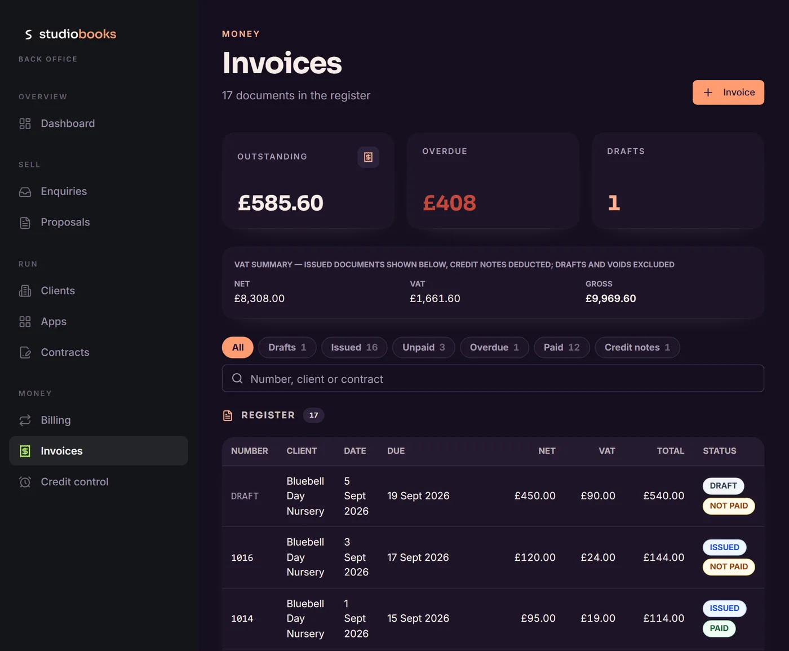
Reading the page#
- Tiles — Outstanding, Overdue and Drafts.
- VAT summary — shown if you are VAT registered: the Net, VAT and Gross of the issued documents in the list below, with credit notes deducted. Drafts and voided documents are left out. It follows the filter and search, so narrow the list and the summary narrows with it.
- Filters — All, Drafts, Issued, Unpaid, Overdue, Paid and Credit notes. The search box looks in the number, client and contract.
- Columns — Number, Client, Date, Due, Net, VAT, Total, Status and Emailed.
- A draft shows "DRAFT" where its number will be. A credit note's number starts with "CN". An overdue invoice shows how many days late it is and its row is tinted.
- Status carries two badges: where the document stands (Draft, Issued or Void) and where the money stands (Not paid, Part paid, Paid, or Credit for a credit note).
Click any row for its details and everything you can do with it.
Raising an invoice by hand#
- Click Invoice at the top right.
- Choose the Client and, if it belongs to one, the Contract (optional).
- Set the Invoice date and Payment terms; the due date is worked out and shown. Period start and Period end are optional.
- Under Lines, type a description, then a quantity and unit price — or just the amount. Choose what kind of line it is: Recurring, Chargeable, Build fee or Adjustment. Click Add line for more.
- Add Notes for the customer if you want something printed on the invoice. Internal notes are never shown to the customer.
- Click Save draft.
There is no invoice number box: the number is allocated when you issue. Amounts are entered before VAT, and the form shows the VAT and total it will carry. To change a draft, click it and choose Edit draft.
Issuing an invoice#
- Click the draft's row. Check the lines and totals, and click View the document to see it as the customer will — a draft carries a DRAFT watermark.
- Click Issue….
- Read the Confirm issue panel and click Issue and lock.
Issuing does four things at once. It gives the invoice the next number in your sequence. It sets the due date from the payment terms. It makes the invoice visible in the client's portal, to the addresses on their record as it stands now. And it marks any chargeable work on it as billed. The message confirms the number, for example "Issued as invoice 1017".
Emailing it to the client#
Issuing doesn't send anything. To tell the client:
- Click the issued invoice and choose Email to the client.
- Check the To address. It starts as the client's accounts contact, or the main contact if there isn't one.
- Add a Personal message (optional) and click Send.
The email goes out under your company's name. It gives the invoice number, date, due date, total and amount owing, your bank details and terms, and a "View your invoice" button that opens the client's portal, where the full document is. The Emailed column then shows the date.
Recording a payment#
- Click the invoice and choose Record a payment.
- Set the Payment date, the Amount received (GBP) — it can be part of what is owed — and a Reference.
- Check the Balance after this payment and click Record payment.
This records money you have already received; it doesn't take a payment. The invoice becomes Part paid, or Paid once what has been received covers the total to within a penny. Earlier payments are listed in the dialog under "Already recorded".
Credit notes#
- Click the issued invoice and choose Raise a credit note.
- Enter the credit amount — before VAT, if you are VAT registered — and a Reason. The amount starts as whatever is left to credit on the invoice. The panel shows the VAT, the Credit total, what is Already credited and what is Remaining creditable.
- Click Raise and issue credit note.
- A credit note is issued the moment it is raised, and takes its own number from the same sequence as your invoices.
- If you are VAT registered, the VAT on the credit is worked out for you and shown before you confirm.
- It is set against the original invoice automatically, reducing what is owed on it. The credit shows in that invoice's payments as "Credit note" with its number.
- The client sees it in their portal beside the invoice it corrects.
- Credits against an invoice can never add up to more than the invoice.
Voiding a draft#
A draft you don't want can be voided: click it and choose Void this draft. It happens straight away. The draft keeps its place in the register, marked Void, but it never reached the customer and never took a number. If it came from the billing run, the chargeable work on it goes back to waiting and the contract's period is re-opened, so the next run raises it again. Only drafts can be voided.
Viewing, printing and saving a PDF#
Click a row and choose View the document to see the finished invoice or credit note exactly as the customer sees it. Print / Save PDF opens the print dialog — choose Save as PDF for a copy to send or file. On a phone the button reads Save PDF and makes a PDF file you can share.
The document prints your legal name, address, contact details and company number, your VAT number if you are registered, the client's name and address, the date, due date and terms, each line, the totals, your bank details and your invoice footer note.
If something's not right#
"This invoice cannot be issued yet — your company set-up is missing …"
An invoice that asks for money has to say who is asking and where to pay. One or more of these is blank: your legal name, address, company email, bank name, account name, sort code or account number — or your VAT number, if you are VAT registered.
Click Finish setting up your company in the message, or fill the gaps in Settings, then issue again. The same check applies to credit notes.
"Your company details are still loading — try again in a moment."
Wait a second or two and click the button again.
"That number was taken at the same moment by another user — this invoice was issued as …"
A colleague issued another document at the same instant and got the number first.
Nothing to fix: your invoice was issued with the next free number, as the message says.
"Choose a client — the customer portal matches invoices on the client account."
An invoice must belong to a client. Choose one, or add the client first on the Clients page.
I can't edit an invoice / there's no Edit button
It has been issued. An issued invoice is a finished document and can't be changed.
Raise a credit note against it and issue a corrected invoice. Both stay in the register.
"… is not on …'s record." when emailing an invoice
The address you typed isn't one of the client's. If you send there, the client won't receive the invoice, and it will still be marked as emailed.
Click the suggested address to use the client's own, or — if you really mean it — tick Send it to … anyway and click Send anyway. To make the address the client's, add it to their record first.
"… has no email address on record. Add one on the client first."
Open the client and add an accounts contact or main contact email, then email the invoice.
"Only an issued invoice can be emailed — issue it first"
Drafts can't be sent. Issue the invoice, then email it.
"A credit note cannot be larger than the invoice it credits." / "Credits against this invoice cannot exceed its total"
The credit you entered, added to any credits already raised, comes to more than the invoice.
Lower the amount. The panel shows what is Remaining creditable. Remember the amount you type is before VAT.
"Enter a payment amount." / "Enter a credit amount."
The amount box is empty or zero. Type the figure and try again.
"Draft voided, but some records need checking by hand"
The draft was voided, but part of the tidy-up couldn't be done. The message says which: chargeable work still marked as invoiced, or a contract that has since been billed for a later period, so its schedule was left alone.
For chargeable work, log it again on the Billing page if it still needs charging. For the contract, check its Next invoice date and raise the missing period by hand if you need it.
"Rendered from the local record — the document function could not be reached."
The document on screen was built from the invoice as saved, because the usual service didn't answer. It is still correct to read; close and reopen it for the normal version.
The VAT summary doesn't match what I expected
It covers only the issued documents in the list as currently filtered and searched, with credit notes taken off. Drafts and voided documents never count.
Set the filter to All and clear the search for the whole register.
Credit control#
Credit control shows what is owed to you, by whom, and for how long: every issued invoice with a balance, grouped by client and by age. The chasing is still yours to do — nothing is sent automatically — but the page tells you where to start and puts the tools on the same row.

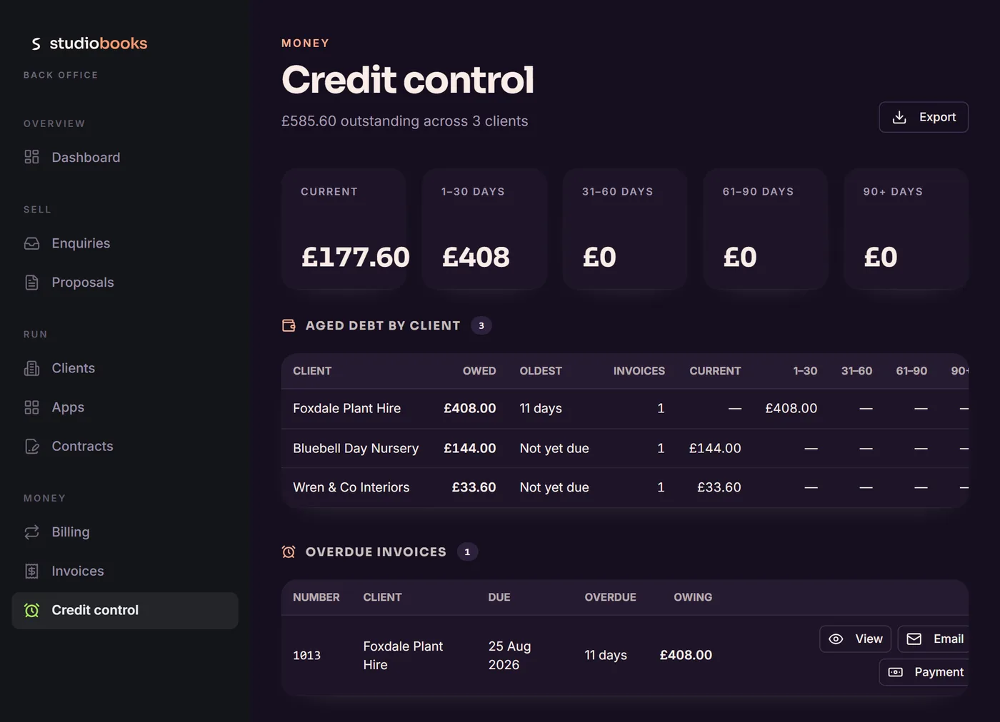
Reading the page#
- The line under the title gives the total outstanding and how many clients it is spread across.
- Five tiles split it by age: Current (not yet due), 1–30 days, 31–60 days, 61–90 days and 90+ days overdue.
- Aged debt by client has a row per client: what they owe, how overdue their oldest invoice is, how many invoices, and the split across the same five bands.
- Overdue invoices lists each overdue invoice with its due date, days overdue and amount owing.
- A warning appears when any client has debt more than 90 days old.
Credit notes don't appear here in their own right. A credit has already reduced the balance of the invoice it corrects.
Acting on a debt#
- On an overdue invoice, View opens the document, Email re-sends the invoice email, and Payment records money received.
- Click a client's row to see all their unpaid invoices together, with the accounts contact's email and phone number, and View, Email again and Payment on each.
- Export downloads the aged debt as a spreadsheet file (CSV), named after your company and the date.
These are the same actions as on the Invoices page. Recording a payment here updates the invoice everywhere.
If something's not right#
"Nothing outstanding" although a client owes money
Only issued invoices appear here. Drafts and voided documents never do.
Check the invoice has been issued on the Invoices page.
An invoice the client has paid is still listed
Studiobooks doesn't see your bank account. An invoice stays owing until you record the payment.
Click Payment on its row and record what was received.
The Export button is greyed out
There is nothing outstanding to export.
An invoice shows as overdue sooner, or later, than I expected
The due date is set from the payment terms when the invoice is issued — the terms on the invoice, counted from the invoice date, or from the end of the invoice month if you have switched Terms run from the invoice date off.
Check the client's and the contract's payment terms, and the switch under Settings → VAT & invoicing. Changes apply to invoices issued from then on.
Settings#
Settings holds everything the setup wizard asked for, and a little more, on six tabs: Company, Profile, VAT & invoicing, Email, Team and Website. Open it from the bottom of the menu.
There is no Save button on the company tabs. Each box saves by itself when you click or tab out of it, and a switch saves the moment you flip it. A small "Saving…" appears while it does. Only Owners and Admins can change company settings; the Profile tab is your own and is open to everyone.

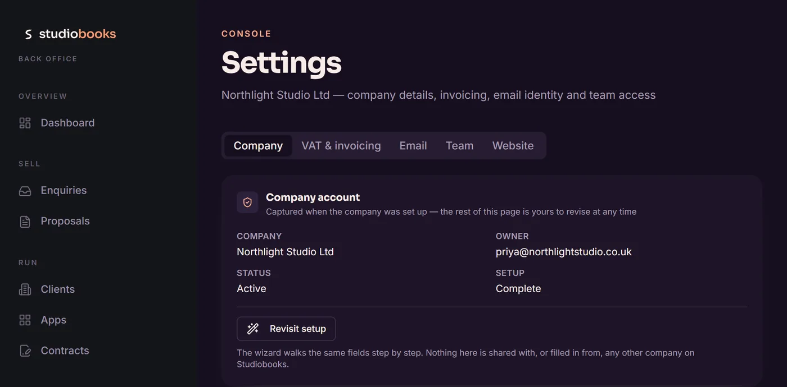
Company#
- Company account — the company name, owner, status and whether setup is complete. These are read-only. Revisit setup walks the wizard again.
- Identity — Legal name (as it appears on invoices), Display name (what customers see everywhere else), Tagline, Company number and Registered office.
- Your signatory — Who signs on your behalf, Their position and Upload signature. These fill in your half of the signature block on order forms and signed documents. A PNG with a transparent background under 2 MB reads best.
- Trading address and Contact — the address block on documents, and the phone, email and website shown on documents and in the portal.
- Logo and colours — your Logo, Logo for dark backgrounds, Primary colour and Accent colour, with a small preview. They go on every invoice, proposal and order form you issue, and on the portal your customers sign in to.
Owners also see two extra cards on this tab. Sample data is described below. Records from before setup is a housekeeping check for records created before a company existed; for a studio that started with the setup wizard it reports that there is nothing to adopt.
Trying the app with sample data#
If you're the Owner and haven't issued anything yet, the Sample data card can fill your company with a made-up book of business — clients, apps, contracts, invoices, a proposal, enquiries and documents — so you can see what a working month looks like. Every name and figure is invented.
- Optionally, type an address you can sign in with under "Portal sign-in for the sample clients". It becomes the portal login for two of the sample clients, so you can see the customer's side for yourself. Use a different address from the one you sign in to the back office with.
- Click Load sample data and wait for the count to finish.
- When you've finished exploring, click Remove sample data. Records you created yourself aren't touched.
Profile#
- Your profile — Your name, Phone and Job title. Click Save changes. Your email is your sign-in and can't be changed here.
- Appearance — System, Light or Dark, saved on this device only.
- Session — shows who you're signed in as and your role, with Sign out.
- Danger Zone — Delete Account permanently removes your own login and profile and signs you out. Your company's records — clients, contracts, invoices — stay with the company.
VAT & invoicing#
VAT. The VAT registered switch decides whether the invoices you raise carry VAT.
- Off — no VAT line appears on anything issued. Not a zero; no line at all.
- On — VAT is added at your VAT rate and your VAT number is printed on every invoice. Fill in the number first: registration can't be switched on without one.
- An individual contract can carry its own rate.
- Documents already issued keep the VAT they were issued with. Changing the switch later doesn't rewrite them.
Studiobooks applies the position you set. It doesn't work out whether you should be registered, and it doesn't file anything with HMRC. The VAT summary on the Invoices page is there to help you and your accountant; check it against your own records.
Bank details. Bank, Account name, Sort code and Account number make up the payment panel on every invoice and in the invoice email.
Invoicing. Document numbers start at, Default payment terms, Terms run from the invoice date and Payment terms options work as described under Numbering and payment terms. Invoice footer note is free text printed at the foot of every invoice — the usual home for a trading-name and registered-office line.
Billing setup complete unlocks the billing run and clears the dashboard reminder. You don't normally need it: the run unlocks by itself once the address, VAT position, bank details and default payment terms are filled in. The switch is for confirming a deliberately unusual setup.
Email#
- From name — the sender name on emails to your customers, such as proposals and invitations. Usually the name they already know you by.
- Reply-to address — where a customer's reply lands.
- Notification address — where the app tells you something has happened: a new website enquiry, a proposal accepted or declined, an order form or document signed.
Team#
Inviting colleagues and setting their roles is covered in Your team and roles.
Website#
This tab is for whoever looks after your website. It lets your site's contact form drop enquiries straight into the Enquiries register.
- Website enquiry endpoint shows the address your form posts to, your enquiry key, and a ready-made code snippet. Each has a Copy button.
- Every submission must carry your enquiry key. It is what routes the enquiry to your company; a submission without it, or with the wrong one, is rejected.
- Each accepted submission creates a new enquiry with the source Website and emails your notification address.
- The snippet includes a hidden field called
website. Leave it blank — it catches automated spam. - Your website's own address also has to be on your company's list of allowed sites. If the tab doesn't name your site, email peter@edwardsapps.co.uk with your website's address before you go live.
The second card on this tab confirms that Studiobooks runs the daily billing job for you; see Automatic invoicing.
If something's not right#
"Could not save that change."
The change didn't reach the server — usually a connection blip — and the box has gone back to its saved value.
Type it again and click out of the box. If you're Staff, see the entry on read-only settings.
The VAT registered switch won't stay on
Registration can't be switched on while the VAT number is blank, because an invoice adding VAT has to show the number.
Fill in VAT number first, click out of the box so it saves, then switch VAT registered on. The message you may see is "vat_number is required when vat_registered is on".
I typed a change and it didn't stick
A box saves when you leave it. Closing the page or switching tab while the cursor is still in the box can lose the change.
Click somewhere else on the page first and wait for "Saving…" to clear.
"Sample data can only be loaded before you have issued anything"
The sample documents use numbers from the start of the sequence, and a real invoice must never share a number with a sample one.
Once your company has issued documents of its own, sample data is no longer offered. This can't be overridden.
"Loading stopped part way." / "Removal stopped part way."
If loading stopped, click Remove sample data to clear what was created, then load again. If removal stopped, run it again to finish.
I can't see the Sample data card
It is shown to the company's Owner only, on the Company tab.
"Keep the signature under 2 MB"
Save a smaller picture of the signature — a few hundred pixels wide is plenty — and upload that.
"No enquiry key on this company yet."
The key appears once company setup is finished. Until then the enquiry address can't tell which company a submission is for and rejects it.
Finish the setup wizard (Settings → Company → Finish setup) and come back to this tab.
"You are the last owner of …" when deleting your account
Deleting the only Owner would leave the company with nobody in charge.
Make another colleague an Owner under Settings → Team first, then delete your account. If you want the whole company closed instead, email us.
"No company set up yet"
Settings belong to a company, and this account doesn't have one. Click Set up your company — or, if you were meant to join a colleague's company, see this entry first.
For your customers: signing in to the portal#
This part of the guide is for customers of a studio that uses Studiobooks. If a studio has sent you a proposal, an order form or an invoice, the portal is where you'll find it — along with the apps they run for you and any documents they have shared. It carries the studio's own name, logo and colours.
Your first sign-in#
- Open the link in the email the studio sent you, or go to studiobooks.app. On an iPhone or iPad you can use the Studiobooks app from the App Store instead.
- If you don't have a login yet, click Create one and register with the email address the studio's email came to. You can use Continue with Google or Continue with Apple if that address is a Google or Apple account, or choose a password and type in the 6-digit code you're emailed.
- If you already have a login, sign in with it.
The address is what matters. The studio shares things with particular email addresses, and you see whatever has been shared with the one you signed in with. A different address — a personal one, say — will find the portal empty.
Finding your way around#
- Four tabs across the top: Home, Your apps, Invoices and Documents. On a phone they sit along the bottom of the screen.
- Your name at the top right opens a small menu with Settings and Sign out.
- The foot of every page has the studio's contact email, and links to the Privacy Policy and Terms of Service.

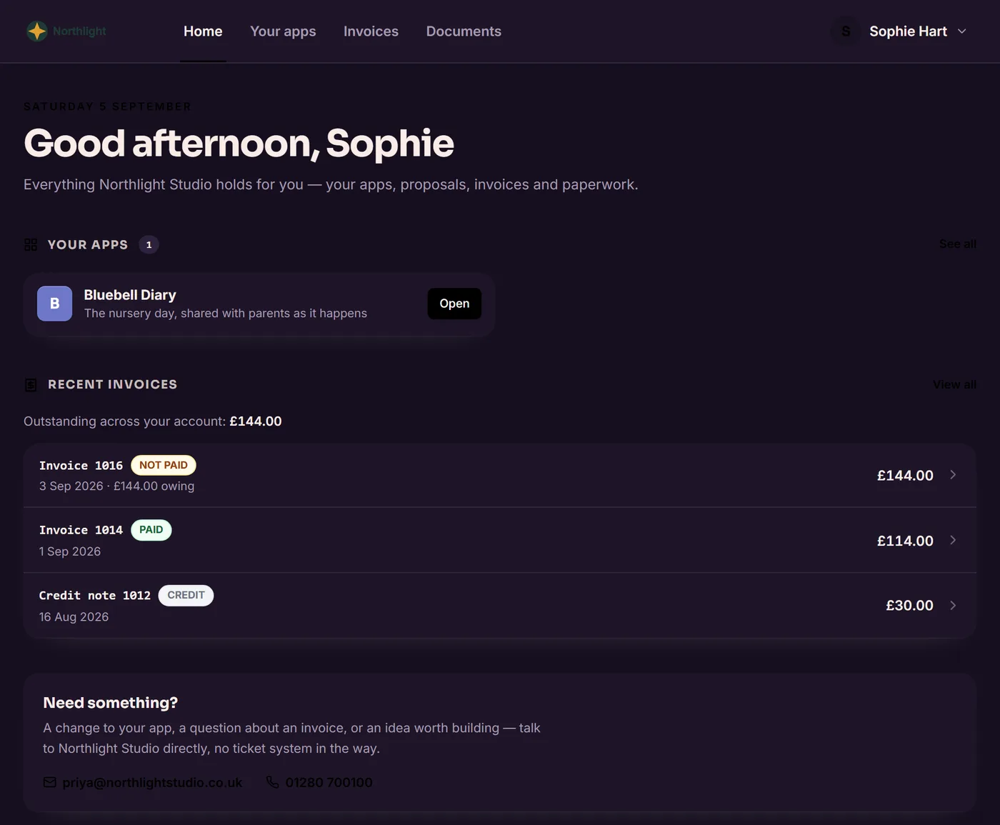
If something's not right#
I've signed in but there's nothing there
You've signed in with an address the studio hasn't shared anything with — often a personal address instead of a work one, or the other way round.
Sign out and sign in with the address the studio's email was sent to. If that is the address you used, ask the studio to check it is on your record and to share the item again.
After registering I'm asked to "Set up your company"
Studiobooks doesn't recognise your address as anyone's customer, so it has treated you as a new studio.
Don't fill it in. Click Sign out at the bottom of the page and sign in with the address the studio's email came to — or ask the studio to invite the address you want to use.
I see a different company's portal from the one I expected
A portal login shows one business at a time. If two businesses on Studiobooks have shared things with the same address, you may keep seeing the first.
Ask the second business to use a different address for you.
"No access yet"
The address you signed in with isn't set up. Sign out and back in with your work email, or the address your last invoice arrived at, and ask the studio to check which address they hold for you.
I can't remember my password
On the sign-in page click Forgot password?, enter your address and click Send reset link. If you registered with Google or Apple, use that button instead — there is no password to reset. See Forgotten your password?
Portal: home and your apps#
Home gathers everything the studio holds for you onto one page.
- Anything waiting for you is at the top. An order form to sign shows a Review & sign button. A proposal waiting for your answer shows View & respond.
- Your apps — each app the studio runs for you, with an Open button. See all goes to the full page.
- Recent invoices — your latest four, with what is outstanding across your account. View all goes to the full list.
- Documents and Proposals — what has been shared with you. Click one to open it.
- Need something? — the studio's email address and phone number, for anything you want to ask them.

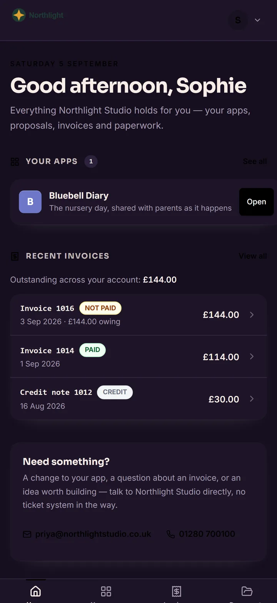
Your apps#
The Your apps tab has a card for each app, with its status, a line on what it does and a note of what the monthly charge covers.
- Open app opens the app itself. Open demo appears where there is a demo to try.
- Copy link copies the app's address so you can pass it to colleagues.
- App Store and Google Play appear when the app is in the stores.
- User guides are listed on the card. Click Preview to read one, then Download, Print, Share or Copy link. Anyone you give the link to can read the guide without signing in.
If something's not right#
"No apps here yet"
The studio hasn't made an app visible to you yet. It appears here, with its link, when it is ready to hand over. If you think it should be there already, ask them.
"Could not copy the link on this device"
Your browser blocked the copy. Open the app with Open app and copy the address from the address bar instead.
Portal: reading and answering a proposal#
A proposal sets out what the studio would build for you, what it would cost and what happens next. You can accept or decline it online.
Answering from the emailed link#
- Click "Read the proposal" in the email. The proposal opens in your browser — no account needed.
- Read it through. A bar stays at the bottom of the page showing who it was prepared for and, where there is one, the date it is open until.
- Click Accept this proposal or Decline.
- Type Your name, add a note if you'd like to, and click Accept proposal or Decline proposal.
Answering in the portal#
- On Home, click View & respond, or click the proposal under Proposals.
- Read it, then click Accept or Decline in the bar under the tabs.
- Check Your name, add a note if you'd like to, and click Accept proposal or Send response.
The studio is told straight away, and the bar changes to show your answer and the date. Accepting tells the studio you'd like to go ahead; the agreement itself is the order form they send you next, which you sign in the portal.
If something's not right#
"This proposal has lapsed"
The date the proposal was open until has passed, so it can no longer be accepted online.
Get in touch with the studio if you'd still like to go ahead; they can extend it or send a current version. You can still decline it.
"This proposal has been superseded" / "no longer open for a response"
The studio has replaced it with a newer version, or it has already been answered. Ask them for the latest one.
"Proposal not found"
The proposal isn't shared with the address you signed in with, or the link is out of date.
Check you're signed in with the address the studio wrote to. If you were expecting it, contact the studio.
"Please enter your name"
Your answer is recorded against a name. Type it in the Your name box and send again.
Portal: documents and signing#
The Documents tab holds the paperwork the studio has shared with you, grouped under Agreements, Data processing, Privacy policies, Guides and Other documents. A file opens in a new tab for you to read or download. Order forms, and documents the studio has written for you to sign, open inside the portal.
Signing an order form#
An order form is the agreement between you and the studio: what they are building, the fees and the term, with the studio's standard terms attached.
- Click "Review and sign" in the email, or Review & sign on the portal's Home page, or open it from Documents, where it reads "Awaiting your signature".
- Read it through to the end, including the terms attached to it.
- Click Sign order form.
- Type Your full name and, if you like, Your position (optional). Tick the box to confirm you have authority to sign for your company and that you accept the order form and its terms.
- Click Sign order form.
Your typed name is your signature. It is recorded with the email address you signed in with and the exact time, and printed in your half of the signature block. The studio is told at once. The signed copy stays under Documents, and it is frozen — it will always show exactly what you signed.
Print / PDF opens a printable copy; from there you can print it or save it as a PDF.
Signing another document#
An agreement or policy the studio has asked you to sign works the same way: open it, read it, click Sign, type Your full name, tick the box and click Sign. Print / PDF prints it or saves a copy.
If something's not right#
"Please tick to confirm you have authority to sign"
The box under your name must be ticked before you can sign. If you don't have authority to sign for your company, pass the email to someone who does — they'll need their own portal login, so ask the studio to invite them.
"This document has changed since you opened it. Reload the page, read it again, then sign."
The studio edited the document while you had it open, and you can only sign the wording that is current.
Reload the page, read it through again, and sign.
"Order form not found" / "Document not found"
It isn't shared with the address you signed in with, the studio has withdrawn it, or the link is out of date.
Check which address you're signed in with. If you were expecting the document, contact the studio.
"This order form was already signed" / "This document was already signed"
You, or a colleague with access, signed it earlier. The signed copy is under Documents, showing who signed and when.
There's no Sign button on a document
Not every document needs signing. Files the studio has uploaded — a guide or a policy, say — are there to read and keep. Only an order form, or a document the studio has sent for signature, has a sign button.
Portal: your invoices#
The Invoices tab lists every invoice and credit note the studio has issued to you.
- Tiles — Outstanding (what you still owe) and Overdue (how many invoices are past their due date).
- Columns — Number, Date, Period covered, Total, Due and Status: Not paid, Part paid or Paid. An overdue invoice shows how many days late it is.
- Click View to open the full document. Print / Save PDF prints it or saves a copy for your records; on a phone the button reads Save PDF.
- Credit notes are listed with a "Credit" tag. The studio sets a credit against the invoice it corrects, so it isn't taken off the outstanding figure a second time.
Paying an invoice#
The portal doesn't take payments. Each invoice shows the studio's bank details and payment terms: pay by bank transfer and quote the invoice number as the reference. The invoice's status changes when the studio records your payment, so it may still read Not paid for a little while after you've paid.
If something's not right#
I've paid, but the invoice still says Not paid
The studio marks an invoice as paid by hand, once the money shows in their account.
Give it a few working days. If it still hasn't changed, send the studio your payment date and reference.
"We could not fetch the full document just now."
A connection blip. The figures the portal holds for the invoice are shown instead. Close it and open it again in a moment, or email the studio if you need a PDF copy.
An invoice I was emailed about isn't in my list
You're signed in with a different address from the one on the studio's records for your accounts.
Sign in with the address the invoice email came to, or ask the studio to add the address you use to your portal access.
Portal: your settings#
Click your name at the top right and choose Settings.
- Profile — Your name, Phone and Job title, as the studio sees them. Click Save changes. Your email is your sign-in and can't be changed here; ask the studio if it needs to move.
- Appearance — System, Light or Dark, saved on this device only.
- Session — Sign out.
- Danger Zone — Delete Account permanently removes your login and profile and signs you out. It can't be undone. The invoices and documents the studio has issued to your company stay on the studio's records.
Links to the Privacy Policy and Terms of Service are at the bottom of the page.
If something's not right#
"Please enter your name" when saving my profile
The name box can't be left empty. Type your name and click Save changes.
"We could not save your changes — please try again"
A connection blip. Check you're online and save again.
I need to use a different email address
You can't change the address on a login. Ask the studio to add your new address to your portal access, then register or sign in with it. Everything shared with your company will be there.
Troubleshooting index#
Every fix in this guide, gathered in one place. Each entry links to the full answer in its chapter — or type what you're seeing into the search box in the contents panel.
Creating your account and signing in
- "Invalid email or password" when signing in
- "Passwords do not match"
- "Invalid verification code" when registering
- No password-reset email arrives
- "Invalid reset link" or "Failed to reset password"
- I expected the back office but landed in a customer portal (or the setup wizard)
- "No access yet — this account isn't set up on Studiobooks yet"
- "We could not read your account"
Setting up your company
- "Your company needs a name — it is what appears on every invoice."
- "Add your VAT number, or switch VAT registration off for now."
- "Keep the logo under 2 MB — a PNG or SVG at a few hundred pixels wide is plenty."
- "Give the client a name — or finish without one using the link below."
- The "Give this address portal access" box is greyed out
- "Your details are saved, but setup could not be marked as finished"
- Every page sends me back to the setup wizard
Your team and roles
- "Requires owner or admin access for this company"
- Settings shows "only an owner or admin can change them — a save will be refused"
- "You cannot change your own role"
- "This is the last admin in your company — promote someone else first"
- "Only an owner can invite another owner" / "Only an owner can make someone else an owner"
- "That address is already a member of this company"
- "Invitation created for … but the email could not be sent."
- "That invitation could not be claimed"
The dashboard
- Banner: "Billing setup not finished"
- A contract I expected isn't under "Due to bill"
- "Nothing invoiced yet" although I have raised invoices
Enquiries
- "An enquiry needs at least a name."
- "Say why it was lost" / "Say why"
- The menu says "Already converted" and Convert is greyed out
- Enquiries from my website aren't arriving
- A website enquiry arrived but I got no email about it
- Logging an enquiry created a second client for a customer I already have
- "Could not load the enquiry register."
The proposal register
- The Value column shows "—", or the wrong figure
- "Send by email" is greyed out
- "The proposal could not be created." / "The proposal could not be duplicated."
Writing a proposal
- "Autosave failed — your last change is not saved yet."
- "The preview could not render with the current values"
- "… needs a hex colour like #488F00."
- "No client brand colour found — set an app tile colour on one of their apps first."
- "Proposal not found"
- The PDF has white borders, or cuts the page off
Sending a proposal and getting an answer
- My client sees "This proposal link isn't available"
- "Enter a valid email address."
- "Your company name is not set — add it in Settings before sending a proposal"
- "This proposal has been superseded — send the replacement instead"
- "Link this proposal to a client first — portal sharing needs their addresses."
- "… has no portal or contact emails yet — add one on the client record."
- I shared the proposal to the portal but my client can't see it
- My client says the proposal has lapsed and they can't accept
- A client accepted, but no email told me
- "Could not reach the clipboard."
Clients
- The Create client button is greyed out / "A client needs a name"
- "Looks close to … — check you are not creating a second account for the same customer."
- "… invitations could not be sent" after creating a client
- A client's Outstanding figure looks too low
- A client's Monthly figure shows "—" although they have a contract
- I can't find a way to delete a client
Portal access and documents
- My client has signed in but can't see a proposal, invoice or document
- "That does not look like an email address." / "Already on the list."
- "Save or undo your changes to the list before inviting someone."
- "This address signs in to a company's back office on Studiobooks…"
- "This address already has customer portal access from another business on Studiobooks."
- "Portal access granted, but the email to … did not send"
- "… records could not be restamped"
- "This client has no portal, contact or accounts address yet."
- "Give the document a name and some text"
- There's no "Send for signature" on a file I uploaded
- "Shared in the portal, but the email failed"
Apps
- "An app needs a name — it is what the customer sees."
- "Portal visibility needs at least one email on the client record"
- "Nothing to link to" when sending a link
- The card says "Nothing to open yet"
- Someone opening a guide link sees "This guide link isn't available"
- The client can't see their app in the portal
Contracts and order forms
- The billing run never picks this contract up
- "Fill these in before you send it — the order form is missing …"
- "… is not on the client record, so the portal cannot admit it."
- "Link this contract to a client first — the order form needs their details and addresses."
- "The order form is in the portal, but the email to … did not send"
- There's no "Send for signature" in the contract's actions
- "Raise build-fee invoice now" is greyed out
- The contract was saved with a different number from the one shown
- The Create contract button is greyed out
The billing run
- "Billing setup is not finished"
- "Nothing due on this date"
- "Nothing to bill — no item value on the contract and no pending chargeable events."
- "No client account on this contract, so the invoice would be unreachable by the customer."
- "Run failed" / "The billing run failed."
- Chargeable work I logged didn't appear on an invoice
- An automatic invoice was issued but the client says they never got it
Invoices and credit notes
- "This invoice cannot be issued yet — your company set-up is missing …"
- "Your company details are still loading — try again in a moment."
- "That number was taken at the same moment by another user — this invoice was issued as …"
- "Choose a client — the customer portal matches invoices on the client account."
- I can't edit an invoice / there's no Edit button
- "… is not on …'s record." when emailing an invoice
- "… has no email address on record. Add one on the client first."
- "Only an issued invoice can be emailed — issue it first"
- "A credit note cannot be larger than the invoice it credits." / "Credits against this invoice cannot exceed its total"
- "Enter a payment amount." / "Enter a credit amount."
- "Draft voided, but some records need checking by hand"
- "Rendered from the local record — the document function could not be reached."
- The VAT summary doesn't match what I expected
Credit control
- "Nothing outstanding" although a client owes money
- An invoice the client has paid is still listed
- The Export button is greyed out
- An invoice shows as overdue sooner, or later, than I expected
Settings
- "Could not save that change."
- The VAT registered switch won't stay on
- I typed a change and it didn't stick
- "Sample data can only be loaded before you have issued anything"
- "Loading stopped part way." / "Removal stopped part way."
- I can't see the Sample data card
- "Keep the signature under 2 MB"
- "No enquiry key on this company yet."
- "You are the last owner of …" when deleting your account
- "No company set up yet"
For your customers: signing in to the portal
- I've signed in but there's nothing there
- After registering I'm asked to "Set up your company"
- I see a different company's portal from the one I expected
- "No access yet"
- I can't remember my password
Portal: home and your apps
Portal: reading and answering a proposal
- "This proposal link isn't available"
- "This proposal has lapsed"
- "This proposal has been superseded" / "no longer open for a response"
- "Proposal not found"
- "Please enter your name"
Portal: documents and signing
- "Please tick to confirm you have authority to sign"
- "This document has changed since you opened it. Reload the page, read it again, then sign."
- "Order form not found" / "Document not found"
- "This order form was already signed" / "This document was already signed"
- There's no Sign button on a document
Portal: your invoices
- I've paid, but the invoice still says Not paid
- "We could not fetch the full document just now."
- An invoice I was emailed about isn't in my list
Portal: your settings
Questions people ask#
What does Studiobooks cost?
It is free to use today, for the whole studio, with no card needed — free on the App Store and free on the web, with nothing to buy inside the app. Inviting colleagues doesn't change that. If it ever changes, the Studiobooks page will say so plainly.
What can I use it on?
Any modern browser at studiobooks.app, and the Studiobooks app for iPhone and iPad from the App Store. It is the same studio either way and the same account signs into both. On an Android phone, use the browser.
Do my clients need an account?
Not to read and answer a proposal — the emailed link is enough. They do need a login for the portal, which is where they see invoices, sign order forms and find the documents you've shared. They register with the address you hold for them; see Signing in to the portal.
Will my clients see Studiobooks' name or mine?
Yours. Proposals, order forms, invoices and the portal carry your name, logo and colours, and emails go out under your name. Studiobooks appears on the sign-in page and as a small "Powered by" line in the portal's footer.
Does Studiobooks take payments from my clients?
No. Invoices show your bank details and clients pay you directly. Record a payment notes money you have already received.
Does it chase late payers for me?
No — nothing is sent to a client unless you press a button. Credit control shows who is overdue and by how much, and lets you re-send an invoice or record a payment from the same row. The chasing itself is yours.
I'm not VAT registered. Does that matter?
No. Leave VAT registered switched off and nothing you issue carries a VAT line. If you register later, add your VAT number and switch it on under Settings → VAT & invoicing; documents already issued aren't changed. See VAT & invoicing.
Can I choose my own invoice numbers?
You choose where the sequence starts, with Document numbers start at. After that the app gives each invoice the next number at the moment you issue it, so two documents never share a number. Invoices and credit notes share one sequence, and it is yours alone.
I issued an invoice with a mistake on it. Can I change or delete it?
No — an issued invoice is a finished document. Raise a credit note against it, then issue a corrected invoice. A draft, on the other hand, can be edited or voided freely.
What happens if I run the billing run twice?
Nothing is doubled. Each contract moves on to its next period as soon as its draft is created, so a second run finds nothing due for the period already billed.
Can I try it without entering my own clients?
Yes. Before you've issued anything, the company's Owner can load a made-up book of business and remove it again with one click. See Trying the app with sample data.
Can one person be both a colleague and a customer?
Not with one email address. An address that signs in to a back office always opens the back office. Use a second address for the customer side.
How do I delete my account?
In the back office, go to Settings → Profile → Danger Zone and click Delete Account. In the portal, it is under your name, then Settings. It removes your own login and profile at once. A company's records stay with the company.
Getting help#
This guide lives at edwardsapps.co.uk/studiobooks-guide.html, and the PDF at the top of the page is the same thing for printing. There isn't a help button inside the app itself, so keep the link somewhere handy.
Stuck on something this guide doesn't cover, or found a snag? Email peter@edwardsapps.co.uk — you'll be talking to the person who builds Studiobooks, and the answer usually ends up in this guide for the next person. The exact wording of any message, and the page you were on, make a fix much quicker.
If you are a studio's customer, questions about a proposal, an order form or an invoice go to the studio that sent it. Their email address and phone number are under "Need something?" on the portal's Home page.
The app's Privacy and Terms pages are linked at the foot of the sign-in page, and in the portal's footer.